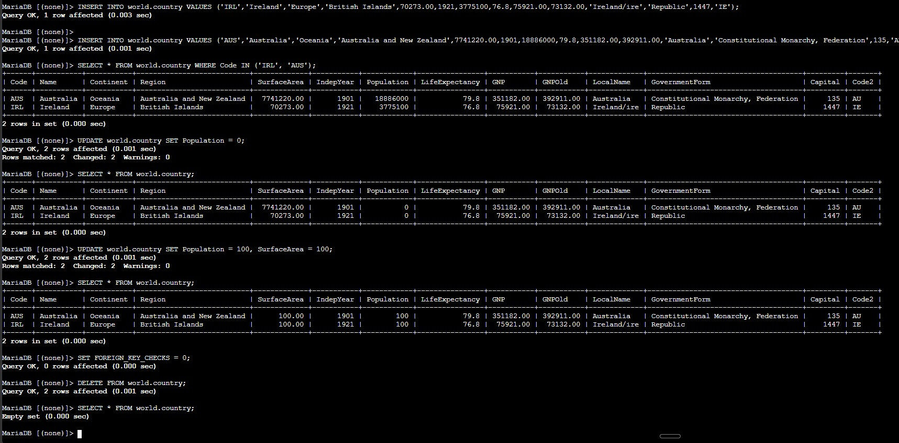
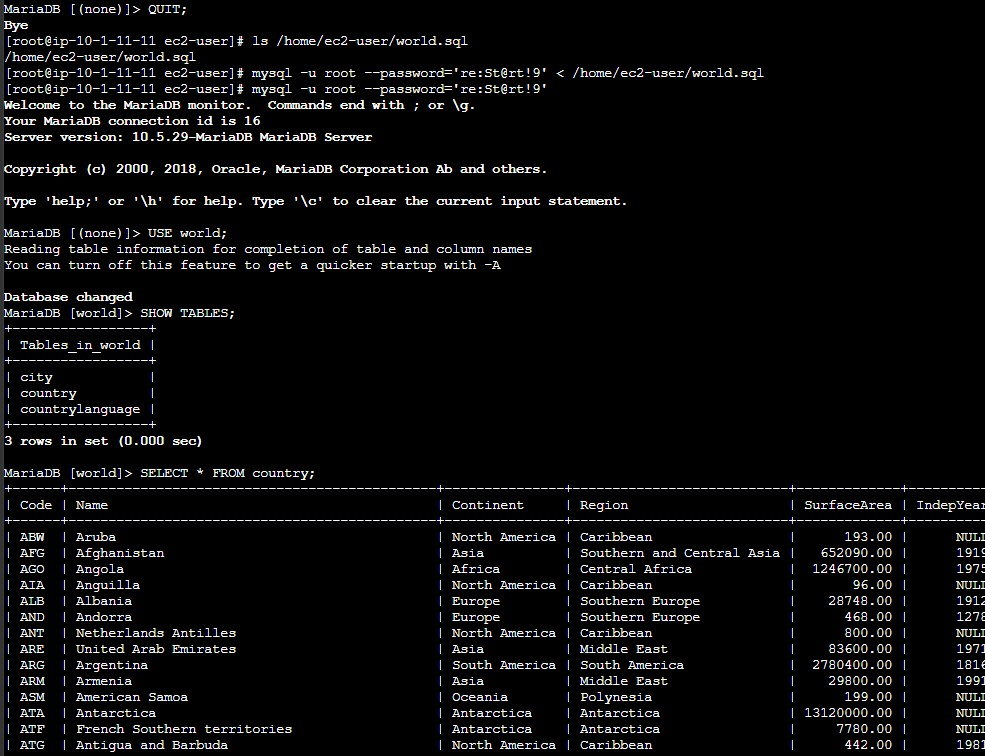

Controlled Inserts
Added Ireland and Australia to the country table and verified the result with a filtered SELECT query.
This lab focuses on row-level changes inside the world database. The workflow inserts sample countries, updates numeric values, deletes the rows again, and then restores the complete sample dataset from a SQL backup file.
Connected to the existing world database, inserted two countries into world.country, updated the Population and SurfaceArea columns for all rows, deleted the records, and restored the full sample dataset with world.sql.
Added Ireland and Australia to the country table and verified the result with a filtered SELECT query.
Updated every row in the table, then removed all rows to observe the effect of DML statements without conditions.
Reloaded the sample environment from an SQL file instead of recreating rows one by one.
The workflow demonstrates how row data changes over time and why verification after each statement matters.
mysql -u root --password='re:St@rt!9'.SHOW DATABASES; to confirm that the world database was already available before modifying any rows.SELECT * FROM world.country; and then inserted Ireland and Australia using two separate INSERT INTO world.country VALUES (...) statements.SELECT * FROM world.country WHERE Code IN ('IRL', 'AUS');.UPDATE world.country SET Population = 0; and confirmed that both rows were affected because no WHERE clause limited the update.UPDATE world.country SET Population = 100, SurfaceArea = 100; to change two columns for every row in the table.SET FOREIGN_KEY_CHECKS = 0;, deleted the rows with DELETE FROM world.country;, and confirmed the empty result set with SELECT * FROM world.country;.
world.country, showing how each statement changes the stored data.QUIT; and verified the backup file path with ls /home/ec2-user/world.sql.mysql -u root --password='re:St@rt!9' < /home/ec2-user/world.sql.world database, and ran SHOW TABLES; to verify the restored city, country, and countrylanguage tables.SELECT * FROM country; to confirm that the backup repopulated the table with many more rows than the two test inserts.
world.sql file is loaded with input redirection, the three tables are restored, and the country table shows the larger dataset again.Key statements used to manipulate rows and reload data from a backup script.
INSERT INTO world.country VALUES (...);Adds a full row to the country table using the same column order defined by the schema.
SELECT * FROM world.country WHERE Code IN ('IRL', 'AUS');Filters the result set to verify only the two inserted rows.
UPDATE world.country SET Population = 0;Updates the Population column for every row in the table because there is no WHERE clause.
UPDATE world.country SET Population = 100, SurfaceArea = 100;Updates multiple columns in the same statement.
SET FOREIGN_KEY_CHECKS = 0;Temporarily disables foreign key enforcement so dependent rows can be removed during the lab.
DELETE FROM world.country;Deletes all rows in the table because no filter condition is provided.
mysql -u root --password='re:St@rt!9' < /home/ec2-user/world.sqlExecutes every statement inside the SQL file to restore tables and data in bulk.
INSERT adds new rows, while UPDATE modifies existing values already stored in the table.UPDATE or DELETE without WHERE affects all rows in scope, which is useful for demonstrations but risky in real environments.< /home/ec2-user/world.sql is a practical way to reload a full sample database quickly.This lab showed the difference between changing structure and changing stored data. Here the important part was observing how the same table can move through insert, update, delete, and restore stages in a short sequence.
The most important operational lesson was to verify the impact of each statement immediately. A quick SELECT after every change makes it easy to detect whether the table contents still match the intended state.